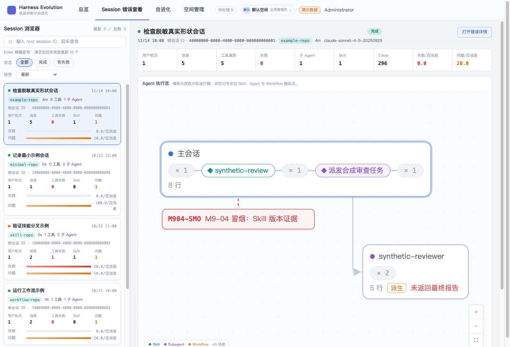
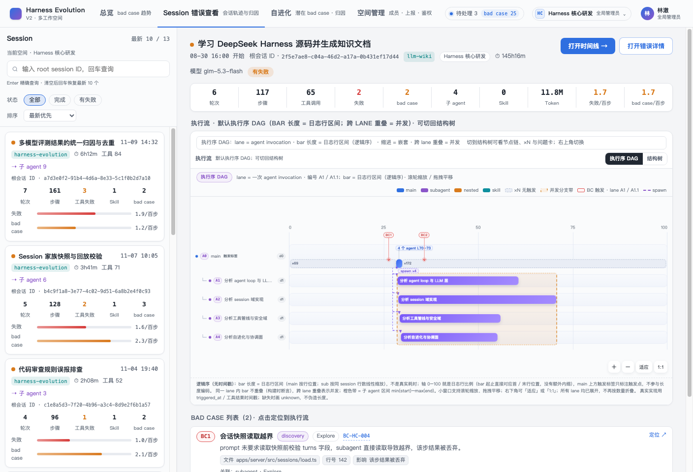
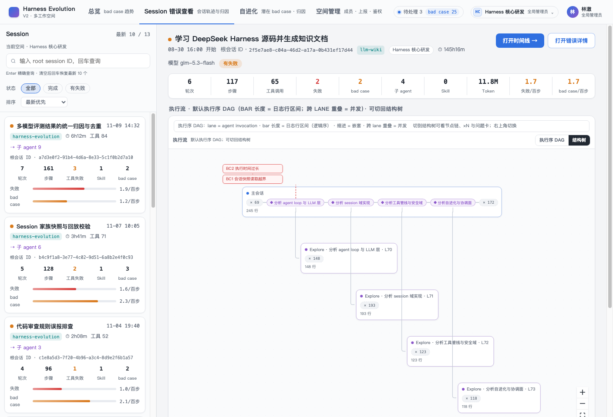

- Commit
- faf0c17
- 数据
- fixtures/m9-real-shape + ws-default bad case
- 服务
- FastAPI + Vite（本地 SQLite）
- 视图
- 1408×960，亮色主题
Harness Evolution · M9-04
M9-04 对象 revision 与触发坐标 · Session 冒烟
在种子 SQLite 数据库上重放 fixtures/m9-real-shape，启动 FastAPI 与 Vite，用真实 Chrome 打开 Session 页，确认 Agent 树正常渲染、两个显式触发事件返回 digest revision，且没有浏览器控制台错误。
5冒烟场景
2对象 revision
0控制台错误
Environment and Artifact
2026-11-16 · macOS · Chrome headless · 1408×960Scenario Matrix
5 pass| # | 场景 | 结果 | 细节 | 证据 |
|---|---|---|---|---|
| 01 | Session 页打开 | PASS | 直接访问 /workspaces/ws-default/sessions/40000000-0000-4000-8000-000000000001，Agent 树与 bad case 正常渲染。 | 01-app-session.png |
| 02 | Skill revision | PASS | synthetic-review 事件返回 digest:b97288…，来自注入 body 与 path 的组合 hash。 | 01-app-session.png |
| 03 | Agent revision | PASS | synthetic-reviewer 事件返回 digest:e04b58…，来自子 Agent 定义与类型。 | 01-app-session.png |
| 04 | 浏览器控制台 | PASS | 页面加载与交互期间没有 console error 或未捕获异常。 | 01-app-session.png |
| 05 | 原型对照 | PASS | 与 V2 原型 Session 页对照；m9-04 不修改前端，执行流 DAG/结构树差异属于既有 V2 迁移范围。 | 02-prototype-session.png 03-prototype-tree.png |
Issues and Observations
No defects foundNo defects were found.
Evidence
3 screenshots


Automated Coverage Assessment
3 areas reviewed| 范围 | 覆盖 | 结论 | 建议 |
|---|---|---|---|
| 对象 revision 解析 | UT | tag/body/digest/unknown 与 agent 定义组合 hash 均有测试。 | 保持 parser version 重放后的回归。 |
| 触发坐标持久化 | UT + SQLite | 迁移、DFS tree_index、triggered_at、object_version 与重放均验证。 | CI 的 MySQL lane 覆盖双方言迁移。 |
| 真实页面 | Smoke | 真实 Chrome 打开 Session 页，事件 revision 可从 API 读到。 | 发布前保留一次同场景冒烟。 |
Conclusion
通过Session 页正常渲染，两个显式触发事件都返回预期 revision，浏览器无错误。
- m9-04 为后端/解析层变更，前端视觉未改动。
- 原型执行序 DAG 与当前页面的差异属于既有 V2 迁移，不在本 issue 范围。
由 dsh-superagent 生成；证据位于 evidence/m9-04/。